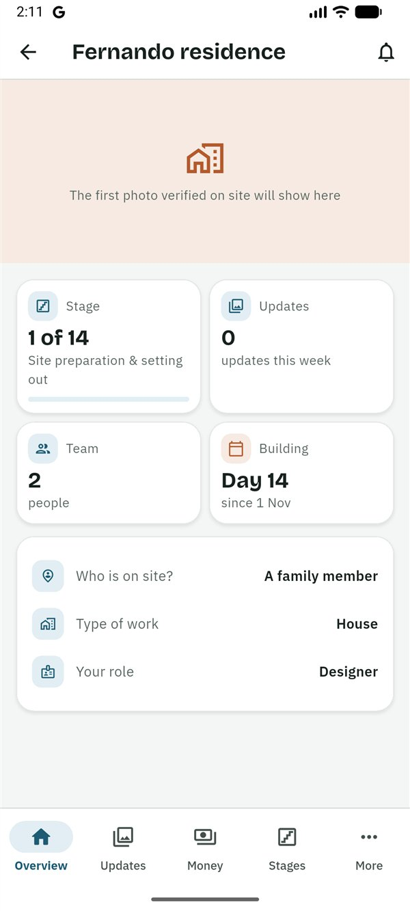
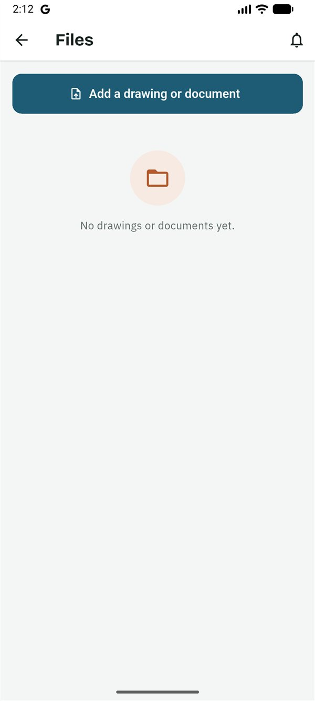
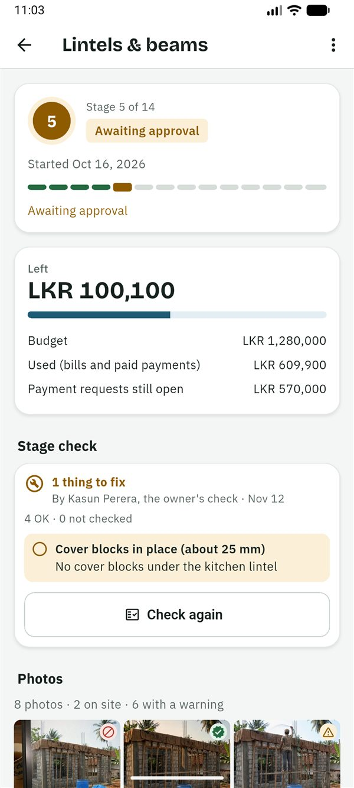

SiteProof
SiteProofGuides › Designer
Guide for designers
සිංහලෙන් කියවන්න (Read in Sinhala)
This guide is for the designer: the architect, draughtsman or engineer of the house. You share the drawings, answer questions about them, and check key stages on site so the family knows the work was looked at by someone who knows. You see the budget only if the owner allows it. SiteProof is free for you.
What you can and can't do
You can
- See the updates and photos, the stages, the team, the site and all documents.
- Add drawings and documents, and remove the ones you added.
- Answer questions on drawings, and comment on updates.
- Check a stage on site against its checklist, and sign it off or list what to fix.
- Post updates from your site visits.
- Propose the stages and amounts from your quotation or BOQ.
- See the changes to the work, and record one for the owner to decide (Plus).
- See the budget, the bills and the payment schedule, if the owner allows it.
You can't
- See or make payment requests.
- Add bills.
- Start or finish stages, or confirm a drawing is seen: that is for the builders.
- Invite or remove people, or edit the project, its stages and budgets (you propose stages instead).
- Set the site location, or ask for a live check.
Getting started
- The owner invites you. You get a message, usually on WhatsApp, in Sinhala and English, with a 6-character code. The code works once, for 7 days.
- Install SiteProof from Google Play. While SiteProof is being tested, only invited testers can install it. It is for Android phones for now.
- Choose සිංහල or English, then read the short welcome or tap Skip.
- Sign in: type your email address and tap Send code, then type the 6-digit code from the email and tap Verify. Or tap Continue with Google. There is no password.
- Under About you, fill in Your name and the Country you live in, then tap Continue.
- On the home screen, tap ⋮ → Join with a code. Type the code and tap Check the code. The app shows who invited you, as Designer. Tap Join this project.
Your projects are on the home screen with a Designer chip, under Your work if you also have projects in other roles. A project opens on the Overview, which shows Your role, the stage, the team and the updates this week. Without budget access, it shows no money.

Add drawings and documents
- Open Files and tap Add a drawing or document.
- Choose a PDF, JPG or PNG file of up to 20 MB.
- Choose the Type: Drawing, Approved building plan, Approval or permit, BOQ / estimate, Certificate of Conformity and others.
- Give it a Title, such as "S-04 Roof slab steel", and tap Upload.
- A new version: upload it with the same title, or hold the document and tap Upload a new version. The old one is marked replaced and kept under older versions.
- Who is told: the contractor and the family member on site get "New drawing: …" and confirm it with Seen, I'll build from this. Under each drawing, everyone except viewers sees who has seen it and who hasn't yet. A new version asks them again.
- Questions: open a drawing to read and answer its comments. The owner sees the whole conversation.
- Remove a wrong file: ⋮ on a document you added → Remove. It leaves Files for everyone; the owners still see who removed it and when. A drawing someone has confirmed for building stays: upload a new version instead.

Check a stage and sign it off
Key stages (the foundation, DPC, lintels and beams, slabs, roof, wiring and plumbing, before plastering, and the small jobs' equivalents) have a checklist of 3 to 5 points, in Sinhala and English.
- At the site, open Stages and tap the stage.
- Under Stage check, tap Check this stage. (A stage with no checklist offers Sign off this stage, with a note.)
- Go through each point. Mark it OK, Fix (and say what needs fixing) or Not checked. Add Anything else to fix, and a note if you like.
- Tap Sign off the stage when there is nothing to fix, or Send … things to fix. You can then add photos of what you checked.
The contractor and the family member on site get the fix list, and mark each point fixed with photos. When all are fixed, you see "Check … again: the fixes are done" in Needs your attention: open the stage and tap Check again.
A stage check is a record, never a gate. Everyone in the project sees it, on the stage ("Signed off", or "2 things to fix") and on its payment requests. The checklists are drafts until an engineer has reviewed them, and the app says so.

Post a site visit
- At the site, open Updates and tap Post an update.
- Tap Take photos, take up to 10, and tap Done.
- Choose the Stage, write What was done? (optional) or record a voice note, and tap Post.
Photos are taken in the app and checked against the site location, like everyone's.
Propose stages from your quote
- Open Stages and tap Propose stages from my quote.
- The proposal starts from the current stages. Rename, add, remove and reorder them, and give every stage an amount (0 is fine).
- Pick the quotation under Quotation or BOQ in Files (optional), and add a Note for the owner (optional).
- Tap Send to the owner.
The owner sees each proposed stage next to the current plan and approves, asks a question or declines. You have one open proposal at a time: sending again replaces it, and Withdraw my proposal takes it back.

Changes, live checks and clients
- Changes to the work (Plus): on Money, you see the changes and their state. To record one (a wider opening, a different slab), tap Record a change, fill in What changes, the cost or saving, the extra days and photos, and tap Save the change. The owner decides.
- Live checks: the owner may ask you for photos now. Open the check, tap Take the photos and post before the time shown, where there is signal.
- A project for a client: on the home screen tap New project and choose A client's house: I'm their designer. Set up the stages, budget and documents, then on the Overview tap Invite your client (the code works for 60 days). When they join, they own the project and you stay on as its designer.
Good to know
Who sees what
- You see the budget, the bills and the payment schedule only if the owner turns on Designer can see the budget. Otherwise Money shows the changes to the work and says the rest is only for the people who manage the money.
- You never see payment requests or the owner's weekly summary.
- Everyone in the team sees your drawings, your stage checks and your updates. Viewers see the drawings but not the contract.
- People in the project see your name and role, and your phone number if you signed in with one.
The photo badges
- Verified on site: taken in the app inside the site's circle (usually 150 m) and uploaded soon after.
- Warning: something couldn't be fully checked, such as a site location not confirmed yet or weak GPS.
- Flagged: taken far from the site, with a simulated location, or the same photo posted twice.
A badge shows where and when a photo was taken. It doesn't prove the quality of the work: that is what your stage checks are for.
Plans
SiteProof is free for you: only the owner pays. While SiteProof is being tested, every project has Plus free. Features marked (Plus) need the owner's Plus plan once plans start; on Free, documents and drawings need Plus too.